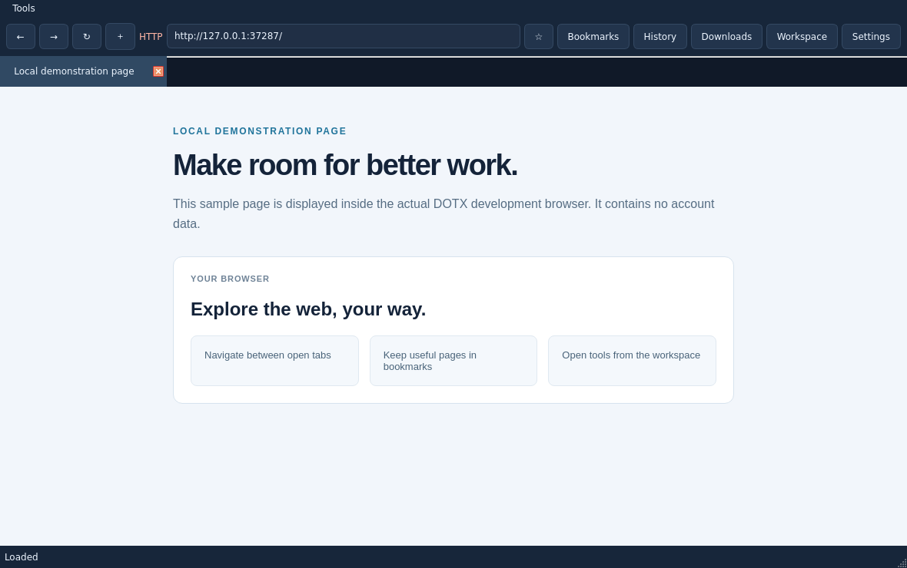

One familiar starting point
Navigate, search, and move between tabs in a streamlined desktop window.
A Windows browser project designed to bring everyday browsing and your essential tools into focus.

Navigate, search, and move between tabs in a streamlined desktop window.
Save bookmarks and revisit browsing history stored on your device.
Quick-launch services or search public GitHub repositories. Experimental GitHub sign-in requires configuration and has not been tested with a real account.
Read the current capabilities, limitations, and release status before you install.